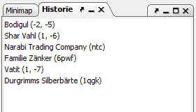

Das Lesezeichen-Dock zeigt alle Lesezeichen an.

Durch Drücken von Strg+F2 kann man für das aktuell ausgewählte Objekt (Einheit, Region, Schiff, Gebäude, Insel) ein Lesezeichen anlegen. Gibt es schon ein Lesezeichen für das Objekt, wird es wieder gelöscht. Durch Drücken von F2 bzw. Umschalt+F2 kann man in der Liste der Lesezeichen vorwärts bzw. rückwärts springen. Über das Lesezeichenmenü kann man die Liste der Lesezeichen zudem speichern und laden.